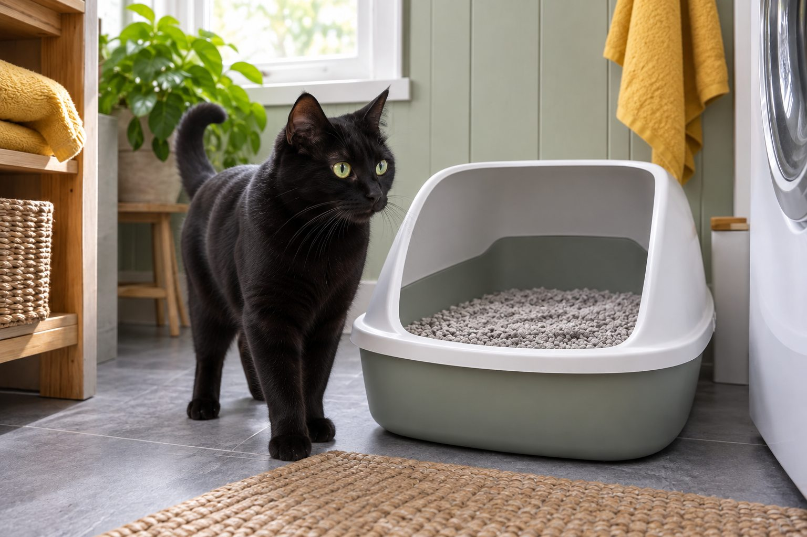

Scoop at least once daily. Replace the litter fully and wash the box at an interval that suits the litter type, box, and number of cats.
Cats notice a dirty box long before people do. A reliable routine helps control odor and makes it easier to see changes in urine or stool. The exact replacement interval depends on whether the litter clumps, how many cats use the box, and how clean it stays.
Daily care matters most
Scoop solid waste and urine clumps every day, and more often in a busy household. Top up with fresh litter so your cat has enough depth to dig and cover. Keep a small bin or sealed bag nearby to make the task easy to repeat.
As you scoop, notice a sudden change in clump size, frequency, or stool. These observations can help you decide whether to contact your veterinarian, especially if your cat strains or seems uncomfortable.
A clean box depends more on what you do each day than on one dramatic empty-and-refill date. Remove waste promptly, look at the amount of urine and stool, and replenish litter to the depth your cat accepts. The daily check gives you a useful baseline: fewer clumps, unusually large clumps, diarrhea, or repeated trips can be worth discussing with a veterinarian. Do not let a deodorizer cover a change you would otherwise notice. A box that smells strongly to you may be even less inviting to a cat with a sensitive nose.
Keep a scoop, waste bag, and hand-washing supplies nearby so maintenance is easy to repeat. Use a lidded bin if practical, but do not store waste open beside the box. If several people share the job, agree on a visible routine rather than assuming someone else handled it. A predictable clean box supports comfort and makes changes in litter habits easier to spot.
When to empty the whole box
Clumping litter may stay usable longer when it is scooped well; nonclumping litter usually needs more frequent complete changes. Follow the product directions, but also trust the condition of the box. A strong odor, damp base, or lots of fine dirty litter means it is time to replace it.
When you empty the box, wash it with mild unscented soap and water, rinse well, and let it dry before refilling. Strong scents can discourage some cats from using it.
How often to replace all the litter varies with the product, number of cats, box size, and how thoroughly it is scooped. Follow the manufacturer's instructions as a starting point, then adjust based on actual odor, moisture, and your cat's willingness to use the box. Nonclumping litter may need full replacement sooner than a clumping product that allows waste to be removed cleanly. Avoid mixing a large amount of fresh litter into a persistently dirty box; residue on the bottom still needs attention.
When you empty the box, wash it with a mild unscented product, rinse well, and dry it before refilling. Strong perfumes and harsh cleaners can leave odors the cat dislikes. Check the plastic for deep scratches that hold smell even after washing. Replace a worn box if it cannot be cleaned well. Introduce a new litter gradually when possible; a sudden texture or scent change may cause refusal even when the box is objectively clean.

Set up the box for success
Place boxes in quiet, accessible areas rather than next to noisy appliances or food. A common starting point is one box per cat plus one extra, spread across the home. Some cats prefer an uncovered box or a particular litter texture.
Introduce a new litter gradually by mixing a little with the familiar one. Sudden changes in box location or scent may lead to avoidance. If a cat begins toileting outside the box, consider both medical and environmental causes.
Location is part of litter care. Put boxes where a cat can reach them without being cornered by a person, another pet, or a noisy appliance. In a multilevel home, one box in a remote laundry room may be inconvenient for an older cat. Separate resources are particularly valuable in a multicat household, where one animal may block access without an obvious fight. Observe the route to the box from the cat's favorite resting spaces, not only whether the box fits the floor plan.
Size and entry height matter as well. A cat should be able to turn around comfortably, and a stiff senior may need a lower side. Covered boxes can hide odor from people while trapping it for the cat; some cats prefer an open design. If a cat starts toileting outside the box, arrange veterinary advice before assuming poor housekeeping or deliberate misbehavior. Pain, illness, access, and social stress can all affect litter use.
Keep the routine realistic
A recurring reminder can help with full changes, but check the box itself rather than waiting for the calendar. Replace worn, scratched boxes that hold odor. Pregnant people and people with weakened immune systems should ask a healthcare professional about litter handling precautions.
A practical schedule can be simple: scoop daily or more often when needed, check the litter level, and set a recurring reminder to wash and refill according to the product and household use. Keep spare litter available so you do not postpone a full change. If you travel, give the caregiver clear instructions for scooping and for recording any unusual output. A change in urine volume can be easy to miss when each person assumes another noticed it.
Try not to chase a perfectly scentless box with perfumes. Fresh air, regular waste removal, and a clean surface address the source of odor. Air fresheners or scented litter may make the area pleasant to a person while making it less acceptable to the cat. If odor persists despite good maintenance, check whether waste is trapped outside the box, the plastic is worn, or the cat has changed elimination habits.
Practical details
Why the litter type changes the timing
Clumping litter lets you remove urine-soaked material at each scoop, which may keep the remaining litter usable longer. Nonclumping products absorb moisture differently and often need a complete change sooner. The product label is a starting point, but the real test is whether the bottom of the box is dry, the litter still separates cleanly, and odor is under control without heavy fragrance.
The number of cats matters as much as the product. A single small box used by two cats will deteriorate faster than several well-placed boxes. Adding depth cannot fix a wet base; empty and wash the box when the litter is saturated. Use a scoop that reaches the corners, where residue often collects.
A litter-box routine you can maintain
Scoop waste, check clump size and stool, and top up litter if the depth is getting shallow.
Notice odor, damp spots, and whether every cat can access a quiet box without being blocked.
Empty the box, wash with mild unscented soap, rinse, dry, and add fresh litter.
Call a veterinarian if your cat strains, makes repeated unproductive trips, or suddenly avoids the box.
What a well-placed box looks like
A cat needs a route to and from the box that feels safe. Put boxes in separate quiet locations rather than lining them up side by side. An older cat may need low sides and easy access on each floor of the home. A covered box hides waste from people, but some cats dislike the trapped odor or restricted exit, so observe the cat's preference.
Choose a litter texture your cat accepts. If you change products, mix a little new litter into the familiar one over several days rather than replacing everything abruptly. Cats that stop using a box may have a medical problem, a location problem, or both. Cleaning helps hygiene but does not diagnose the reason for avoidance.
Watch the cat rather than the calendar alone. A cat that approaches, sniffs, and leaves may be telling you the box is uncomfortable, inaccessible, or associated with a bad experience. More digging than usual, perching on the edge, or choosing nearby surfaces can be clues. These observations do not identify the cause, but they help you decide what to investigate. Keep the box available while you make changes; do not punish the cat for avoiding it.
If you try a new litter, offer an additional box with the new product while preserving a familiar option. This lets the cat show a preference without being forced into a sudden switch. In a multicat home, note which cat uses which box if possible. A camera aimed at the area, without invading anyone's privacy, can sometimes reveal access problems, but veterinary evaluation remains important when elimination changes suddenly.
Use cleaning as a health observation
Scooping gives you a daily chance to see changes that might otherwise be missed. Larger urine clumps, repeated tiny clumps, diarrhea, constipation, or blood are reasons to contact a veterinarian. A cat that repeatedly tries to urinate with little or no output needs urgent care, particularly a male cat. Do not wait for the next full litter change to see whether the problem goes away.
Keep a brief note of when the change began and whether food, water, or behavior changed too. This information helps a clinic decide how quickly to assess the cat. For routine cleaning, wash your hands afterward and avoid strong disinfectants that leave a lingering smell. A clean box is useful because it supports both comfort and early observation.
Imagine a household that scoops regularly but empties every box on the same fixed day. One heavily used box begins smelling sooner, while another stays clean longer. A more useful plan is to inspect each box and replace litter based on its actual condition. That approach also makes it easier to notice if one cat is producing far more urine than before. The goal is a clean, accessible toileting area, not rigid adherence to a date.
When accidents occur, clean the soiled surface thoroughly with a product appropriate for the material, and keep the litter area easy to reach. Do not move the only box abruptly to hide it. Record when accidents started, whether stools and urine look different, and whether the cat appears to strain. A cat trying to urinate without producing urine needs urgent veterinary care. Routine litter maintenance is also an important health observation opportunity.
The box itself should be checked whenever litter is replaced. A cracked edge can be uncomfortable, and scratches in old plastic can retain odor. Wash and dry the box thoroughly before refilling, but avoid a heavily scented cleaner. Keep the litter depth reasonably consistent so the cat does not encounter a different surface after every full change. If you switch products, preserve a familiar box while offering the new litter in another one. This gives the cat a choice and lets you see preference without risking sudden refusal.
In a household with more than one cat, a single clean box may still be difficult to use if another cat guards the doorway. Place boxes in separate accessible locations and watch for subtle blocking, not just overt fights. If urine or stool appears outside a box, record the timing and arrange veterinary advice, especially when the change is sudden. Clean the accident area while keeping acceptable boxes available. The litter routine succeeds when cats can use a clean, safe place comfortably and when caregivers can spot a change early.
A clean box from your cat's point of view
Watch how your cat approaches the box. A cat that circles, hesitates, or leaves quickly may be reacting to odor, location, texture, or another cat blocking access. Scoop waste regularly and refresh litter according to the product and the number of cats using the box. Wash the empty box with a mild unscented product, rinse it well, and dry it before adding fresh litter.
If accidents begin, do not assume the cat is being difficult. Check whether the box has moved, the litter brand changed, or household noise increased. Urinary pain and other medical problems can also change box habits, so arrange veterinary advice when a previously reliable cat suddenly avoids the box. Straining to urinate, frequent tiny attempts, or distress should be treated as urgent, especially in a male cat.
Continue exploring
For a broader routine, read Why Is My Cat Suddenly Hiding?, Why Does My Cat Meow at Night?, and How to Help a Cat Feel Safe in a Carrier.
Frequently Asked Questions
How often should I scoop cat litter?
At least daily; twice a day can be helpful for multiple cats or small boxes.
Why is my cat avoiding a clean litter box?
Location, litter texture, stress, and medical issues are possible. A sudden change deserves veterinary advice.
Should I use scented litter?
Many cats prefer unscented litter. Introduce any change gradually and watch your cat’s response.
Editorial references
These resources informed the general guidance in this article. They do not replace advice tailored to your pet.
This guide offers general information. Your pet’s age, health, and history may call for a different plan. For medical concerns, ask your veterinarian.